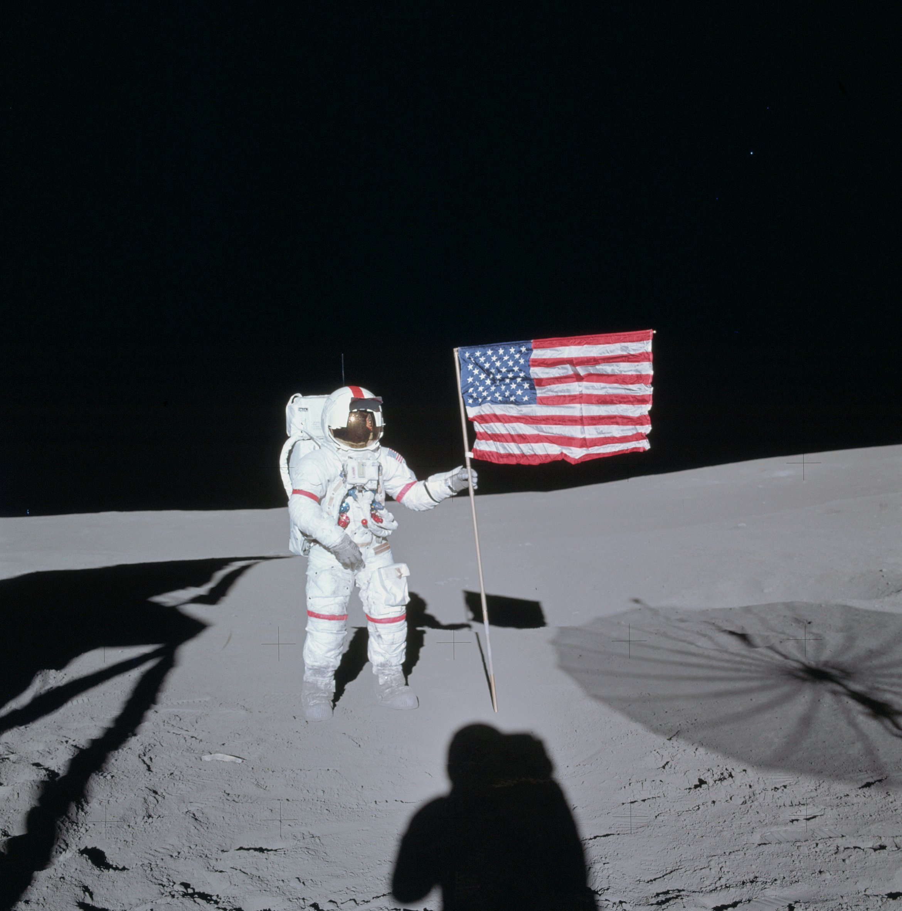
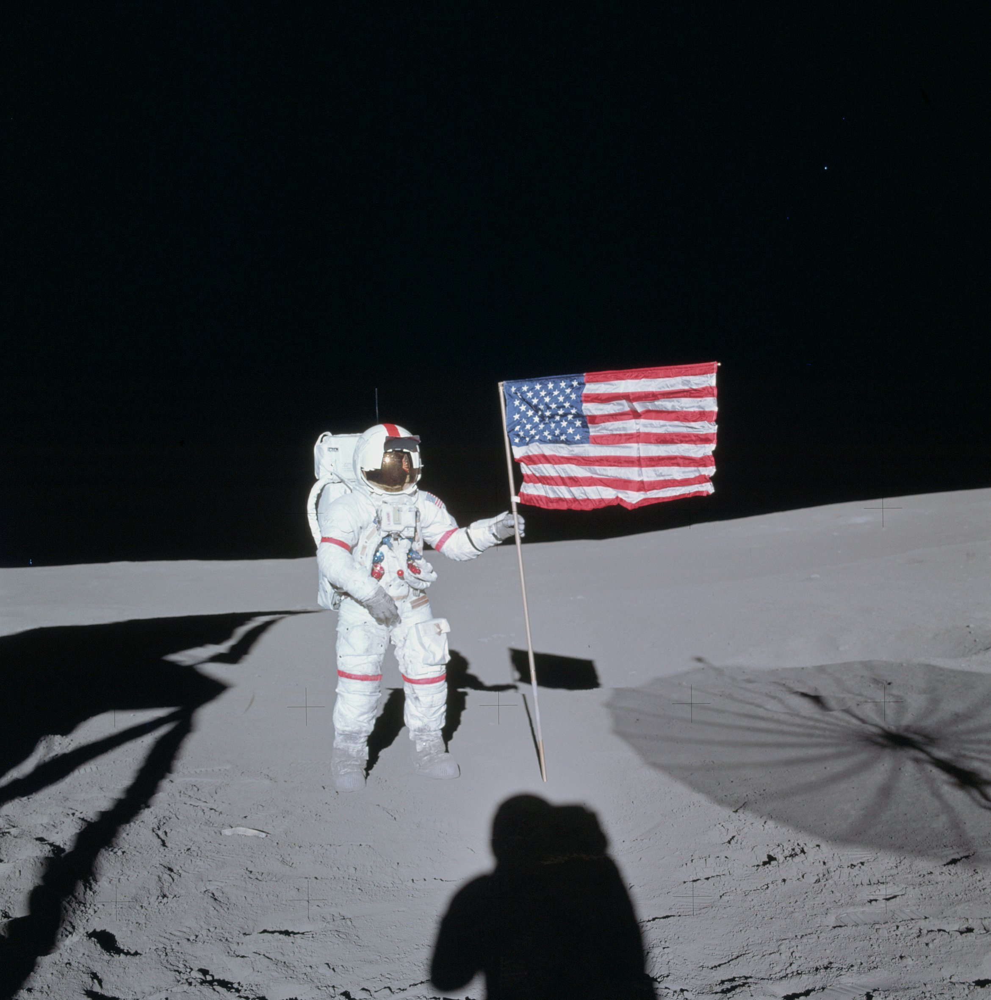

Подробное описание
🌲 Роберт Фрост — поэт, чьи корни в Дерри
В начале XX века Роберт Фрост вместе с семьёй поселился в скромной ферме в Дерри. Именно здесь, среди полей и лесов, он написал многие из своих самых известных стихотворений, включая “Mending Wall” и “Tree at My Window”.
• Ферма Фроста (1900–1911) стала местом рождения его уникального голоса — простого, но философского, отражающего жизнь и природу Новой Англии.
• Сегодня эта ферма — национальный исторический памятник, куда приезжают туристы и любители поэзии, чтобы пройтись по тропам, где рождались строки, ставшие классикой.
• Фрост умел превращать обыденное в вечное: каменные стены, деревья и сельские пейзажи становились символами человеческих отношений и поиска смысла.
🚀 Алан Шепард — “Spacetown” и шаг в космос
Через несколько десятилетий Дерри снова вошёл в историю — на этот раз благодаря Алану Шепарду. Родившийся в 1923 году в Восточном Дерри, он прошёл путь от мальчика, подрабатывающего на аэродроме, до первого американца в космосе.
• В 1961 году его полёт на корабле Mercury-Redstone 3 стал символом начала американской космической эры.
• Позже, в 1971 году, Шепард командовал миссией Apollo 14 и стал пятым человеком, ступившим на Луну.
• Его достижения принесли Дерри прозвище “Spacetown”, и город до сих пор гордится своим земляком.
✨ Дерри как перекрёсток вдохновения
Истории Фроста и Шепарда удивительно дополняют друг друга.
• Один показал, что слова могут быть вечными, другой — что человеческая смелость способна достичь небес.
• Вместе они сделали Дерри местом, где рождаются легенды: поэтические и космические.
 Derry
Derry
 
